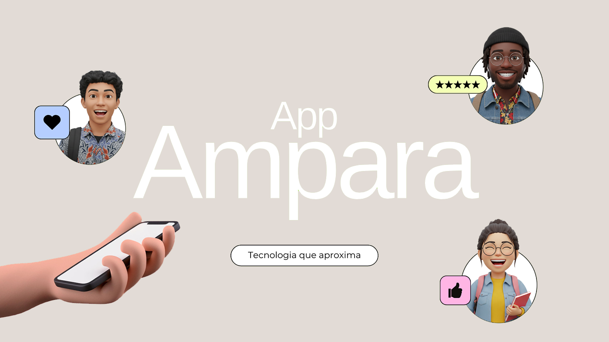

Proposta de aplicativo para inclusão e integração universitária, desenvolvida em Práticas Integrativas no Unibave. Participei da concepção do produto e de sua apresentação em formato de pitch deck.
O Ampara propõe conectar estudantes que precisam de auxílio a pessoas próximas que possam ajudar. A proposta considera alunos PCDs, estrangeiros e neurodivergentes e apresenta ambientes do aluno e da administração.

Apresentação visual da entrega.
Destaques da entrega
Conexão proposta entre alunos e auxiliadores por proximidade.
Planejamento de percursos acessíveis e zonas calmas.
Ambiente administrativo proposto para relatórios e horas complementares.
O projeto final da disciplina partiu de necessidades de acessibilidade e integração no campus, incluindo tradução, Libras, locomoção e ambientes de menor estímulo.
Meu papel e escopo
Participei da concepção e da apresentação da proposta com a equipe. O pitch descreve recursos planejados para os ambientes do aluno e da administração.
Objetivos e requisitos
Planejar a conexão entre alunos auxiliados e auxiliadores.
Considerar percursos acessíveis e zonas calmas.
Apresentar a proposta, o modelo de operação e a viabilidade financeira.
A entrega documentada é a proposta de produto e seu pitch deck. O processo reuniu concepção, modelagem do negócio e apresentação de uma solução de inclusão universitária.
Próxima etapa de validação
Detalhar a contribuição de cada integrante e validar os fluxos com os públicos atendidos antes de implementar localização e gestão dos atendimentos.